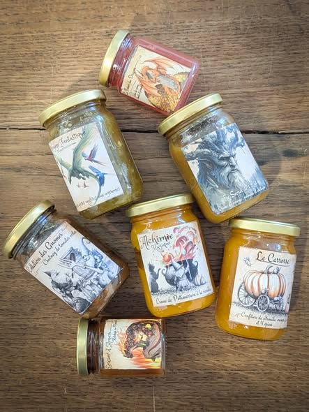
Confitures & crèmes
Alchimie Magique, Le Carrosse, Trésor du Dragon… des recettes aux noms de légende.
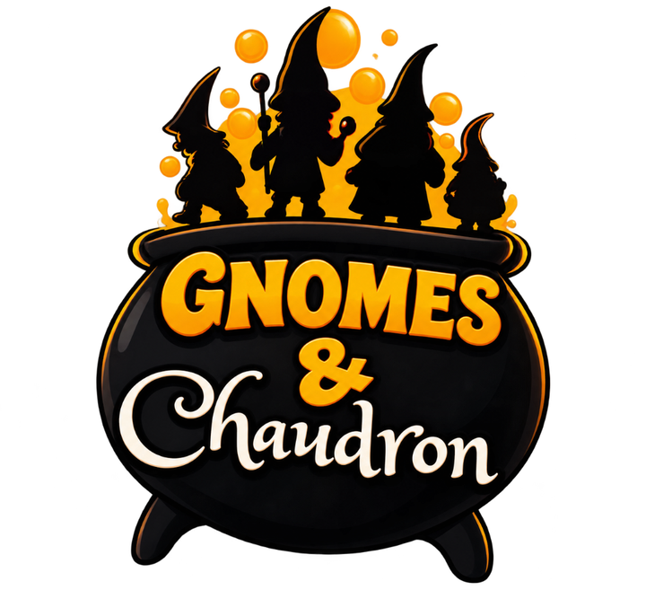
Gnomes & ChaudronL'explorateur du monde magique
Délices fantastiques & animations féériques au cœur du Morvan.
L'explorateur du monde magique
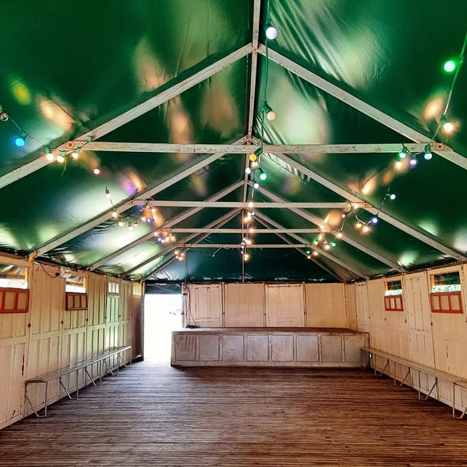
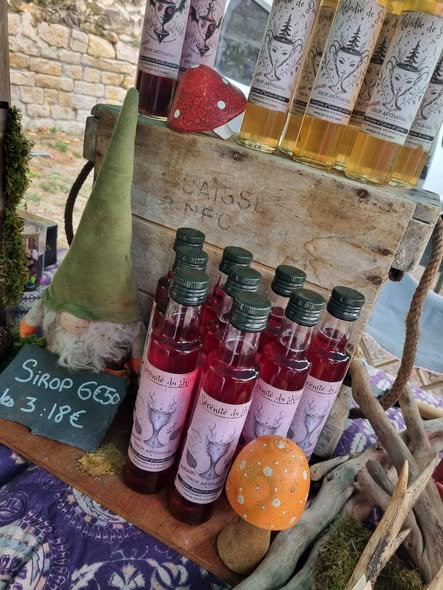
À La Tournelle, Arleuf, Gnomes & Chaudron concocte confitures, sirops, gelées, huiles, tapenades, pickles et autres curiosités végétales — avec la même énergie que les contes : un peu d'alchimie, beaucoup de nature.
Sur les marchés et dans les jardins partagés, Marlon Chanez fait aussi vivre des animations nature et féériques : jeux de piste, ateliers alchimie & métamorphose, et projets farfelus nés du Morvan.
Délices fantastiques
Confiotes, sirops, gelées, huiles, tapenades, pickles, confits — chaque pot porte une histoire illustrée.

Alchimie Magique, Le Carrosse, Trésor du Dragon… des recettes aux noms de légende.
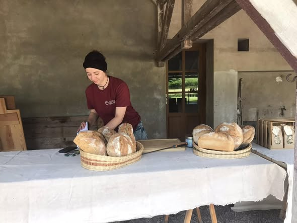
Sérénité du jardin, mélodies végétales et vinaigres aromatisés pour table et potion.
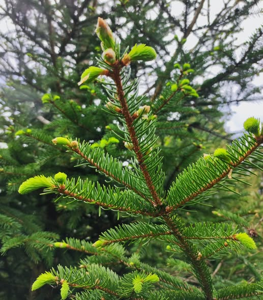
Huiles, tapenades, pickles et autres trésors végétaux pour l'apothicaire du quotidien.
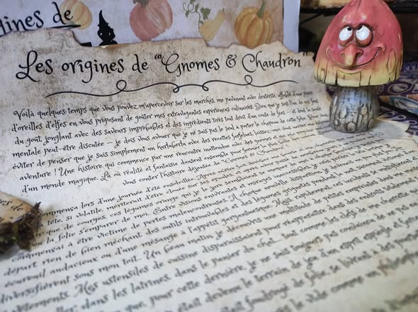
Assortiments à offrir — un petit grimoire de goûts pour les gourmands curieux.
Animations nature & féériques
Jardins partagés, jeux de piste, ateliers « alchimie et métamorphose » et plein d'autres projets farfelus et déjantés — pour petits et grands explorateurs.
Réserver une animation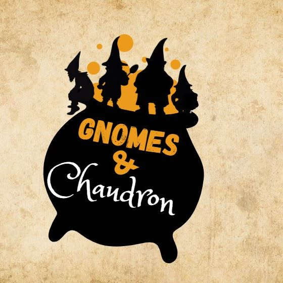
Carnet de route
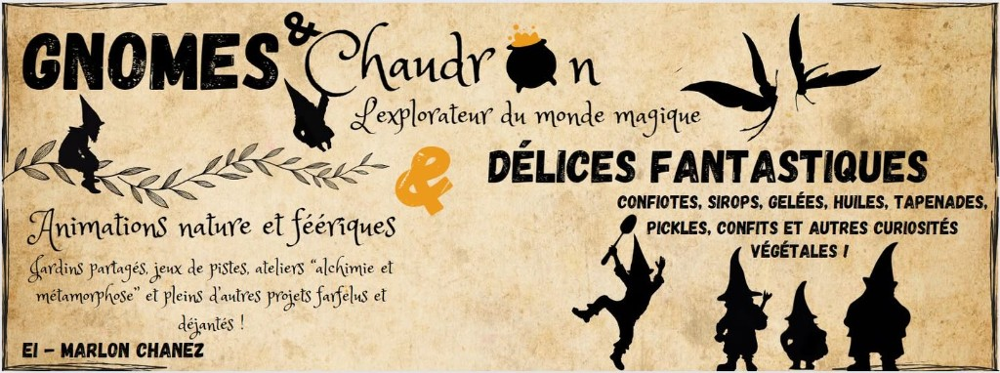
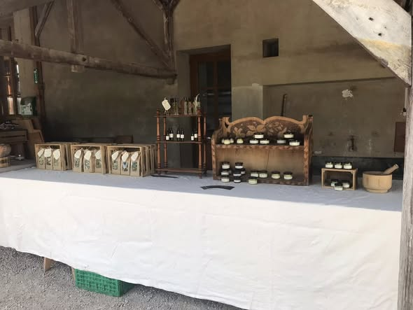
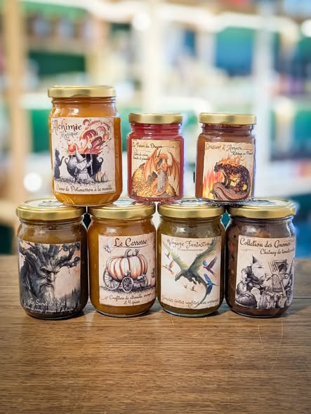
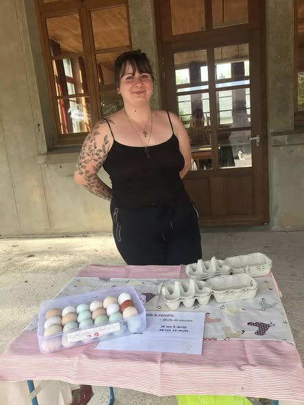
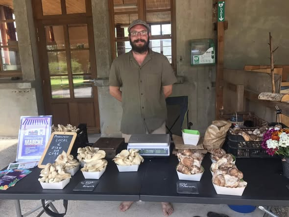
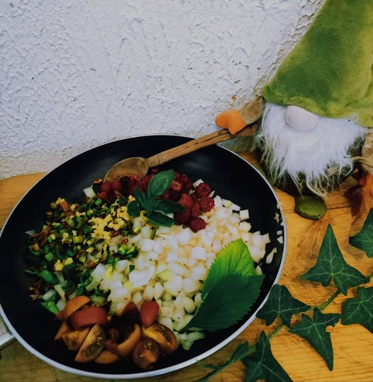
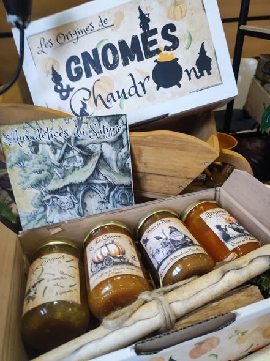
Où nous trouver
Venez croiser les gnomes sur les marchés du Morvan, ou écrivez-nous pour une commande, un atelier, une collaboration.
La Tournelle, Morvan
Chère voyageuse, cher voyageur,
Adresse
La Tournelle
58430 Arleuf, France
Téléphone
+33 6 72 62 90 39
Email
gnomesetchaudron@gmail.com
Réseaux
Facebook — Gnomes & Chaudron
Avec un peu d'alchimie,
Gnomes & Chaudron